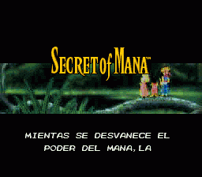

| 1. | Principal |
| 2. | Cajas y Manuales SNES |
| 3. | Proyectos |
| 4. | Documentación |
| 5. | Utilidades |
| 6. | Enlaces |
Aunque ya sé que hay una traducción de este juego, no tiene ninguno de los caracteres españoles y yo, personalmente, los considero primordiales para hacer una traducción, ya que si Squaresoft hubiese accedido a traducir el juego (en su día dijo que no se vendían suficientes copias en España como para que fuese rentable traducirlo, y al final se vendieron más de 15000 unidades en inglés), lo hubiese hecho con todos estos caracteres.
Y como lo prometido es deuda, aquí está el primer parche del Secret of Mana. En principio, todo el texto está ya traducido e insertado, y ya se puede llegar hasta el final sin que aparezcan errores raros o cajas de texto deformadas, por lo que ya lo he puesto al 100%.
La verdad es que me ha costado menos de lo que pensaba, porque a pesar de las adversidades, juergas (que quitan bastante tiempo) y demás, he conseguido sacar el parche en la fecha prevista.
Ahora sólo me queda volver a jugarme el juego entero de nuevo para quitar los errores que queden y elaborar un pequeño documento con secretos del juego que he ido descubriendo y que he leído en Internet.
Y tras mucho tiempo abandonado, volví a rescatar el juego para destripar la introducción, que usa la misma compresión LZSS que el Treasure Hunter G en algunas de sus rutinas. Por tanto, me ha sido relativamente fácil traducir la introducción, comprimirla e insertarla (en medio día lo hice todo). Por tanto, el parche ha quedado ya como yo tenía planeado, puesto que traducir los cartelitos que salen por el juego como "Inn" no tiene mucho sentido.
Por cierto, he puesto dos parches para descargar; deberéis elegir uno u otro dependiendo de qué tipo de ROM en inglés tengáis en vuestro disco duro; me he decidido a poner los dos parches gracias al aviso de Alberto Javier Hernández Rodríguez porque hay demasiadas versiones de esta ROM corriendo por internet.
Últimamente he recibido ayuda de un tal Jesús Gil con los errores tipográficos que está descubriendo en la traducción. He solucionado uno muy evidente en la introducción, y si sigue ayudando y reportando errores, quizá actualice los parches con estas pequeñas modificaciones. Aún así, y salvo estar correcciones, la traducción es definitiva.
VERSIÓN REMAKE:
Actualmente la versión que está para descargar en mi página es una nueva versión de la ROM que ha sido prácticamente remodelada por completo: se han mejorado muchos diálogos, se ha introducido una nueva fuente al juego y se han corregido algunos fallos de la versión anterior. Como véis, si lo último que escribí en esta página fue que la versión que había en ese momento colgada era la definitiva, ahora, 6 años después saco esta nueva versión..... ¡¡SI ES QUE NUNCA SE PUEDE DECIR "NUNCA JAMÁS"!!
En cualquier caso, las nuevas mejoras introducidas hacen que nos plantemos ante un parche prácticamente diferente en su totalidad, tanto por la estética final del juego, muy mejorada, como por la historia, mucho más fácil de entender y de introducirse en ella. Ahora solo falta esperar que de verdad disfrutéis de esta nueva versión y hagáis una maratón: pasaros primero esta primera parte en castellano y luego id a por la segunda y veréis que hay muchas similitudes y da una sensación de continuidad mucho mayor que antes.
Última versión:
La versión 101.2% corrige dos frases de dos diálogos que se salían de la ventana y elimina la comprobación software que detecta en qué máquina está ejecutándose el parche. Estos os permite cargar la ROM PAL y forzar que sea NTSC en el emulador para jugar a 60Hz sin ninguna limitación.
Para usar el parche que os hayáis bajado tenéis dos opciones:
- Ponéis la ROM y el parche en el mismo directorio y con el mismo nombre de archivo pero con las extensiones .SMC y .IPS, respectivamente. Simplemente tendréis que cargar la ROM en Snes9X o ZSnes para poder jugar en castellano. En este caso, la ROM seguirá estando en japonés/inglés y si quitáis el parche de la carpeta donde está, volveréis a jugar al juego en el idioma original de la ROM.
- Utilizáis el SNESTool que podéis conseguir en la sección de Utilidades y lo usáis para parchear la ROM. Abrís el programa y elegís la opción "Use IPS". Buscáis el parche en vuestro disco duro en la ventana de la izquierda del SNESTool y le dais a INTRO. Inmediatamente a eso, buscáis la ROM en esa misma zona izquierda y le dais a INTRO. Ya tendréis la ROM parcheada PARA SIEMPRE en castellano. Este proceso es irreversible, con lo que haced una copia de la ROM original por si acaso. El juego lo podréis cargar entonces en cualquier emulador.
¡¡QUE LO DISFRUTÉIS!!
|  | Letras Especiales: Á,
É, Í, Ó, Ú, Ñ, á. é,
í, ó, ú, ü, ñ, ¡, ¿ (con
fuente VWF) Porcentaje Completado: 101.2% Tamaño Parche: 120 KB / 92 KB Fecha Parche: 28/02/2010 Parches (¡No usar programas de descarga!) : |
Lo que ya está hecho:
- Eliminada la detección software de la plataforma sobre la que se ejecuta el juego, de modo que se puede jugar en una consola NTSC y PAL son problemas (con el uso del adaptador correspondiente).
- La introducción y los créditos del final en castellano.
- Remodelado todo el script para mejorar la historia y darle más profundidad, mejorando la compresión para que se puedan contar más cosas en el mismo espacio.
- Modificados algunos nombres de magias y objetos para darles coherencia con la segunda parte de esta saga.
- Introducida una fuente de letras de anchura variable que da una impresión general mucho más agradable a la vista y permite mucho más texto en cada ventana de diálogo.
- Introducido un nuevo modo de estilo de ventana con fondo liso y sin textura, al estilo de Chrono Trigger o Treasure Hunter G para aumentar la legibilidad de los textos.
- Cambiados muchos gráficos comprimidos en el juego para adaptarlos al castellano.
- Insertada una rutina de detección de sexo en el juego de modo que los mensajes de estado cambien de género según si afectan a la chica protagonista o a alguno de los dos chicos.
- Arreglado un bug de la versión original inglesa que hacía que ciertos mensajes de batalla no siempre aparecieran en la ventana de mensajes.
- Eliminada la detección software del hardware donde se está ejecutando la ROM (PAL/NTSC).
Lo que queda por hacer:
- NADA